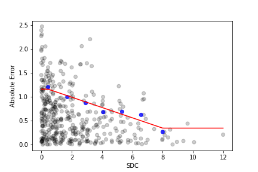
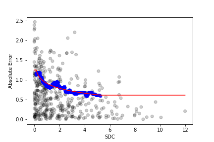
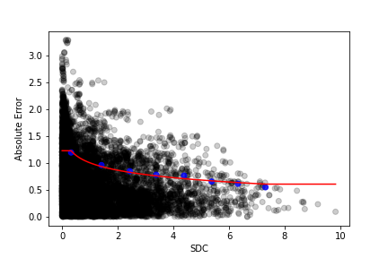
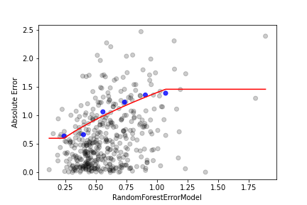

BaseErrorModel class, a library of different methods for
evaluating the
uncertainty
of model predictions, generalizable to any model architecture. No matter how well your model
performs, no model is perfect, and being able to see when a model might be making poor
predictions is a critical tool for the widespread adoption of AI in drug discovery.
For many practical applications, training a
machine learning model is only the first half of the story. Especially in a field with stakes as
high as drug screening and development, being able to assess the certainty of a prediction is
essential to evaluating and deploying models in the real world. In this post, we introduce the
High Level Overview
Building the error metric function
Selecting a calibrator
Scoring with the error model
Getting Started
Basic Error Models
Initialization
Fitting the model
Scoring datasets
Aggregate Error Models
Initialization
Training the aggregate model
Fitting the model
Scoring datasets
References
High Level Overview
All error models are built around the following architecture:
where
is the predicted confidence interval for a molecule ,
is an arbitrary calibration function constrained to linear, logarithmic, exponential, or power,
and
is the error metric function which, given the target molecule, the trained model ,
and the training dataset ,
computes an error metric score. Different error model classes are defined by their unique error
metric function, an example of which is detailed in the Basic Error Models
section.
The workflow of constructing and using an error model consists of three
main steps:
We will now go over each step in a bit more detail.
Building the error metric function
For simple error models, supplying ,
the trained model, and ,
the training dataset, is enough to build the error metric function.
For aggregate error models, building the error metric function is more
complicated. Aggregate error models, as the name suggests, compute an aggregate score based
on
several different error metric functions. In short, an aggregate error model on
metrics has its error metric function defined as
where
is the th
error metric. The function
is unique to each aggregate error model class, and often must be trained on either an
external
dataset or via cross validation of the training dataset against the actual residuals. An
example
of this implementation can be found in the Aggregate
Error Models section, where
is a random forest model.
Selecting a calibrator
Selecting a calibration function
is called fitting. This auxiliary function helps establish a relationship between
the
error metric score and an interpretable confidence interval.
During fitting, a plot of residual vs.
error metric score is generated for either an external dataset or the out-of-fold
predictions
collected via cross validation with the training dataset. The data is then summarized into
quantiles through either binning metric score to a confidence interval value. The function
for
this curve is then assigned to the calibration function. More details about the fitting
process
are explained in the examples below.
Scoring with the error model
After an error model is fitted, both
and
are defined functions, and confidence intervals can be calculated by inputting a target
molecule
or molecules.
Getting Started
We start by training a model on a dataset. For this post, we will
train an
oam.RandomForestModel on a lipophilicity dataset from MoleculeNet. The goal of the proceeding
error models will be to measure the uncertainty of predictions from this model.
import olorenautoml as oam
import pandas as pd
import numpy as np
lipo_dataset = oam.DatasetFromCSV('Lipophilicity.csv', structure_col = 'smiles', property_col = 'exp')
splitter = oam.RandomSplit(split_proportions=[0.8,0.1,0.1])
lipo_dataset = splitter.transform(lipo_dataset)
model = oam.RandomForestModel(oam.OlorenCheckpoint('default'), n_estimators=1000)
model.fit(lipo_dataset.train_dataset[0], lipo_dataset.train_dataset[1])Basic Error Models
To demonstrate a basic error model, we will use the
oam.SDC
error model that employs an error metric function called SDC, or sum of
distance-weighted
contributions. In short, the SDC measures the weighted similarity
between
an input molecule to the training molecules according to the following equation:
where
is the Tanimoto distance between the input molecule
and the training molecule
using Morgan fingerprints with a radius of 2. A higher SDC means the given molecule is more
similar to the training set, while a lower SDC means it is more dissimilar to the training
set.
By default, we set
,
which has been shown to generate the best results.
Initialization
Below is the code for initializing and building the error model. While
no
arguments are required for initialization, method-specific parameters may be set as
different
from default, such as the value of
for SDC. All error models are built with a
BaseModel and a
BaseDataset corresponding to the model and its training
dataset,
respectively.
error_model = oam.SDC()
error_model.build(model, lipo_dataset)If the entire dataset was used to train the model as opposed to only
train_dataset, this can be configured by setting
use_entire_dataset = True during initialization.
error_model.build(model, lipo_dataset, use_entire_dataset=True)Fitting the model
There are two main methods for fitting the error model: fitting
against a
validation dataset and fitting by cross-validation on the training dataset.
Fitting against an external dataset is the most simple and is what we
recommend when such a dataset is available. This could be a validation dataset, a test
dataset,
or withheld data not used during the training process. Below, we fit our error model using
the
validation dataset.
error_model.fit(lipo_dataset.valid_dataset[0], lipo_dataset.valid_dataset[1])
# 420it [00:02, 174.60it/s]
Fitting the error model will generate the above plot of the observed
residuals for the external dataset plotted against their SDC score, depicted by the
black points. In this instance, the fitted error model is a linear model
with a
negative slope, which agrees with our intuition that as molecules become more similar to the
training set (and thus have a higher SDC score), their observed residuals become smaller.
The blue points
depict the 80th percentile for equal-width bins, and the red
curve is the error model, generated by selecting the best curve among
candidate curves fitted against the blue points.
The
.fit() method can also optionally take in arguments for
the error percentile, fitting method, file name to save the plot, and more. For example, if
we
wish to fit 75th percentile error bars using a rolling quantile method with the graph saved
to
'error_model_fit.png', we can run the code below.
error_model.fit(lipo_dataset.valid_dataset[0], lipo_dataset.valid_dataset[1]
method='roll', quantile=0.75, filename='error_model_fit.png')
Methods are restricted to 'bin' for equal-width binning, 'qbin' for
quantile-based binning, and 'roll' for rolling quantile, and other arguments that can be set
are
the number of bins, the minimum number of points required per bin, and the window size for
rolling quantile.
We can also fit the error model with cross-validation, which is done
below
and produces the corresponding graph. Since cross-validation requires no extra data,
.fit_cv() has no required arguments, though it can optionally
take
the same keyword arguments as .fit() for customizing the
curve-fitting procedure.
error_model.fit_cv()
# cross validating with split=0.05
# 168it [00:00, 193.01it/s]
# ...
# cross validating with split=0.5
# 1680it [00:04, 351.05it/s]
The
.fit_cv() method can also take in two option arguments, n_splits=10 and test_size_range=(0.05, 0.5).
Scoring datasets
Once an error model is fitted, it is easy to score a dataset. Here we
compute the predicted error bars for each prediction in the original dataset's
test_dataset.
error_model.score(lipo_dataset.test_dataset[0])
# array([1.07448983, 1.15935886, 1.09753033, 1.02649071, 0.99616767,..])To assess the validity of the predicted error bars, we can compute the
number of predictions in the test dataset that are within their computed error bars.
y_predicted = model.predict(lipo_dataset.test_dataset[0]['smiles'])
error_predicted = error_model.score(lipo_dataset.test_dataset[0])
in_ci = np.abs(lipo_dataset.test_dataset[1] - y_predicted) < error_predicted
print(sum(in_ci) / len(in_ci))
# 0.8357142857142857Since by default we fit 80% confidence intervals, it makes sense that
roughly 80% of the test data are within their confidence intervals.
Aggregate Error Models
Error models become more powerful when aggregated together. Here, we
introduce the
BaseAggregateErrorModel class, which in addition to a model
and its
training data, takes in a list of error models and produces an aggregate score from the
outputs
of those error models. For this post, we will use the
oam.RandomForestErrorModel,
which trains a random forest model on the outputs of the inputted error models to predict a
score that correlates with residuals. This approach is adopted from Sheridan (2015).
Initialization
Like basic error models, aggregate error
models
also
must be built with the trained model and the training dataset. However, we must input a list
of
initialized error models that are to be aggregated together during initialization.
Additional
parameters
for each error model can also be passed in as a dictionary of keyword arguments.
error_models = [oam.SDC(), oam.wRMSD1(), oam.wRMSD2(), oam.PREDICTED()]
rf_error = oam.RandomForestErrorModel(error_models)
rf_error.build(model, lipo_dataset)Training the aggregate model
Unlike for basic error models, most aggregate error models must be
trained
before they can be fitted against residuals. Like fitting, training can be done with an
external
dataset (different from fitting) or cross validation with the training dataset. We recommend
training via cross validation and fitting with an external dataset, which is what we will do
here.
rf_error.train_cv()
# cross validating with split=0.1
# 336it [00:01, 203.51it/s]
# 336it [00:01, 200.63it/s]
# 336it [00:01, 197.38it/s]
# ...
# cross validating with split=0.9
# 3024it [00:03, 775.36it/s]
# 3024it [00:04, 695.52it/s]
# 3024it [00:04, 692.61it/s]The
.train_cv() method can take in two
option arguments, n_splits=9 and test_size_range=(0.1, 0.9).
Fitting the model
We now fit the aggregate model against the validation dataset, which
has
the same procedure as for basic error models. While the data distribution for training and
fitting is ultimately up to the user, do not use the same data for both training and
fitting, as that will result in a poorly fit model.
rf_error.fit(lipo_dataset.valid_dataset[0], lipo_dataset.valid_dataset[1])
# 420it [00:09, 45.05it/s]
# 420it [00:08, 46.92it/s]
# 420it [00:07, 53.38it/s]
As opposed to SDC, the curve here has a positive slope, indicating
that a
greater score outputted by the random forest model corresponds with a greater uncertainty in
the
residual.
Scoring datasets
Scoring datasets also follows the same
procedure as for basic error models.
rf_error.score(lipo_dataset.test_dataset[0])
# array([1.22888853, 0.8210725 , 1.28685512, 0.99717322, 1.10889895,..])
y_predicted = model.predict(lipo_dataset.test_dataset[0]['smiles'])
error_predicted = rf_error.score(lipo_dataset.test_dataset[0])
in_ci = np.abs(lipo_dataset.test_dataset[1] - y_predicted) < error_predicted
print(sum(in_ci) / len(in_ci))
# 0.8214285714285714References
More information on model fitting and
aggregate model training can be found in the Oloren AutoML documentation.
https://pubs.acs.org/doi/pdf/10.1021/acs.jcim.5b00110
https://pubs.acs.org/doi/pdf/10.1021/acs.jcim.8b00114
https://pubs.acs.org/doi/pdf/10.1021/acs.jcim.8b00597